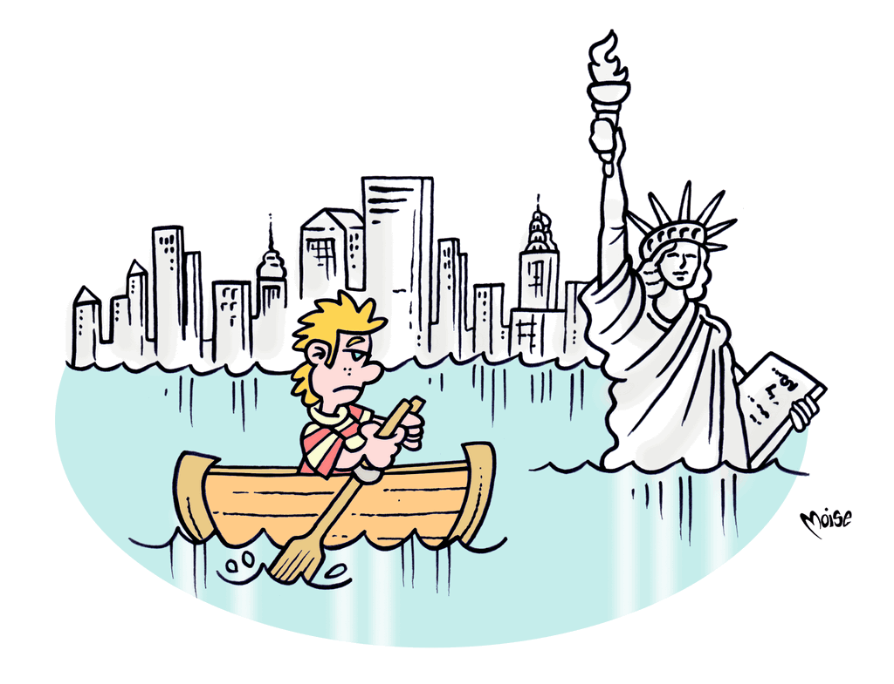
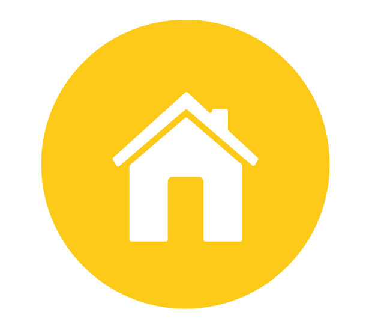
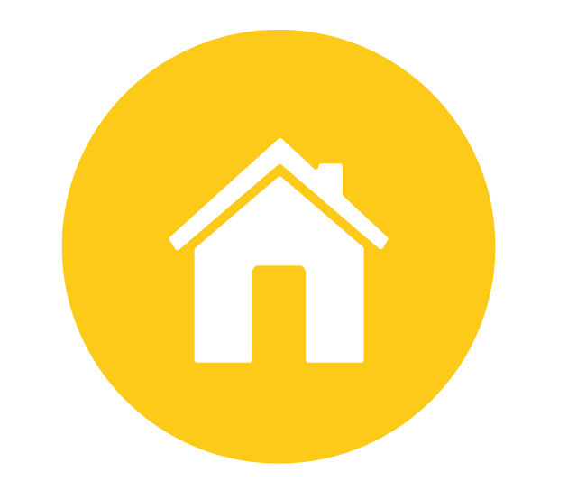

Non gasiamoci troppo
L'effetto serra fa salire le temperature: si sciolgono i ghiacciai e si alza il livello del mare. Tra qualche decennio: Venezia, Londra e New York potrebbero scomparire!
I cambiamenti climatici provocano un aumento della siccità e della desertificazione in alcune regioni del mondo e della frequenza di eventi estremi(alluvioni, tempeste, ondate di freddo e di caldo) in altre; inoltre favoriscono la diffusione di epidemie... i combustibili fossili provvedono a oltre l'85% del fabbisongo mondiale
di energia e la domanda è in costante aumento; l'equilibrio ambientale è molto fragile...Una delle strade da percorrere per sostenerlo è dare impulso allo sviluppo delle energie rinnovabili e a sistemi innovativi di produzione energetica,
nonchè favorire intervento, progetti e comportamenti tali da risparmiare e recuperare energia. Questo consentirà di ridurre le emissioni dei gas e degli inquinanti che possono rendere irrespirabile l'atmosfera della nostra... serra.

 
